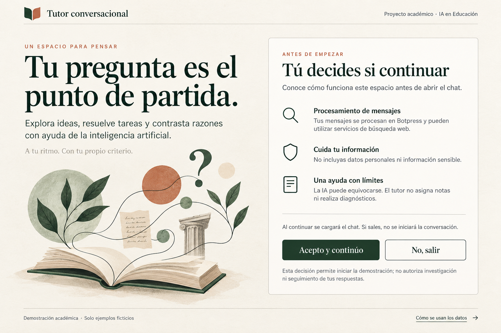

Tutor conversacional · Proyecto académico de IA en Educación
Tu pregunta es el punto de partida.
Explora ideas, resuelve tareas y contrasta razones con ayuda de la inteligencia artificial. A tu ritmo. Con tu propio criterio.
Tú decides si continuar
Esta versión pública es una vista previa. El chat todavía no está habilitado ni se envían mensajes a Botpress.
No incluyas datos personales ni información sensible.
La IA puede equivocarse. El tutor no asigna notas ni realiza diagnósticos.
Cuando el canal se apruebe, el chat solo se cargará después de que aceptes. En esta vista previa no se puede iniciar una conversación.
Si se habilita, esta elección permite iniciar la demostración. No autoriza al equipo a usar respuestas para análisis, investigación o seguimiento.
Demostración académica: solo ejemplos ficticios. No usar con estudiantes ni introducir datos reales.
Cómo se usan tus mensajes
Esta vista previa pública sirve solo la página y su imagen: no carga el chat ni envía mensajes a Botpress. Cuando exista aprobación, se explicarán los servicios que procesan la conversación antes de habilitarla.
Esta vista previa no guarda elección ni mensajes en el navegador. El tratamiento, la retención y el borrado de cualquier conversación deberán verificarse antes de habilitar el chat o usarlo con personas reales.
Por ahora, utiliza solo ejemplos inventados. Iniciar esta demostración no autoriza investigación, análisis de respuestas ni seguimiento, y no sustituye las autorizaciones necesarias para un piloto.
Volver al inicio